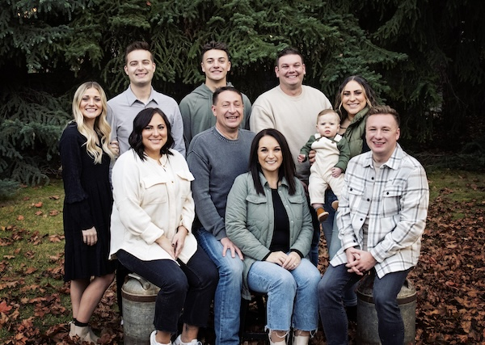

About me

I am 22 year old attending Brigham Young University in Pre-Business. I have been at BYU for three semesters and I enjoy every second of it. My plans in the next few years is to get into the accounting program at BYU and eventually become an accountant. As I have been here at BYU I have found that I enjoy working with numbers. I did't know what I wanted to do coming into college but as I have taken accounting classe, I have realized that it is something I truly enjoy.
Before I came to BYU to start my schooling, I was serving a full-time mission for the Church of Jesus Christ of Latter-day Saints. I was serving in Houston Texas. I was there for two years and I loved every second of it. I gained many new skills and met lots of new people. One of my favorite memories was that I was able to serve on the Texas A&M campus for half of my mission. I was able to talk with many people my same age, who were going through similar life changes as me.I was born and raised in Idaho Falls. I have lived there my whole life and it is somewhere that I could see myself living long term with a family I am the youngest of 5 in my family, I have 3 older sisters and one older brother, and they were all great examples to me. Something about my family is that we are a basketball family. Both of my parents played basketball as well as all of my siblings, so from an early age I fell in love with basketball. My family and I all love to play together and we also love to watch basketball.
